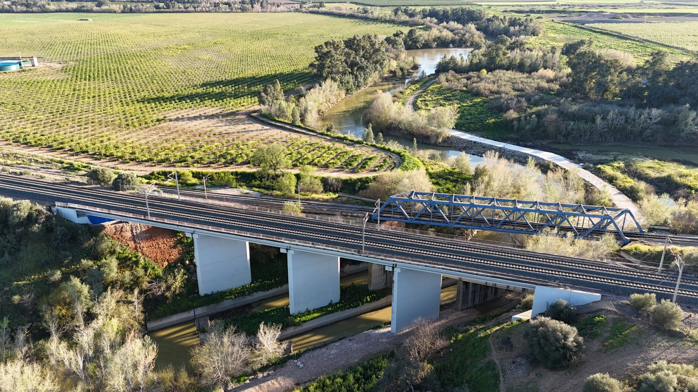
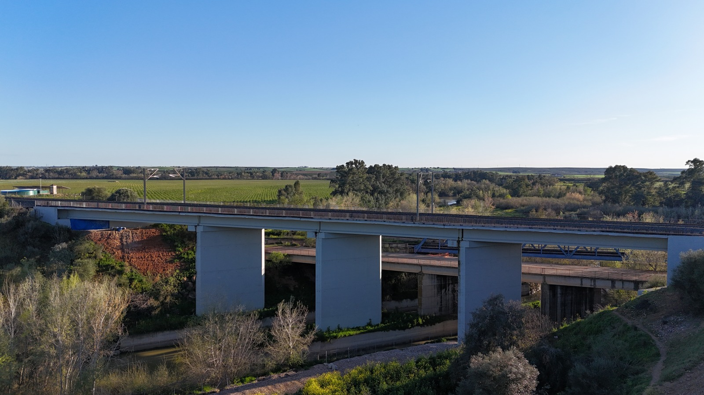
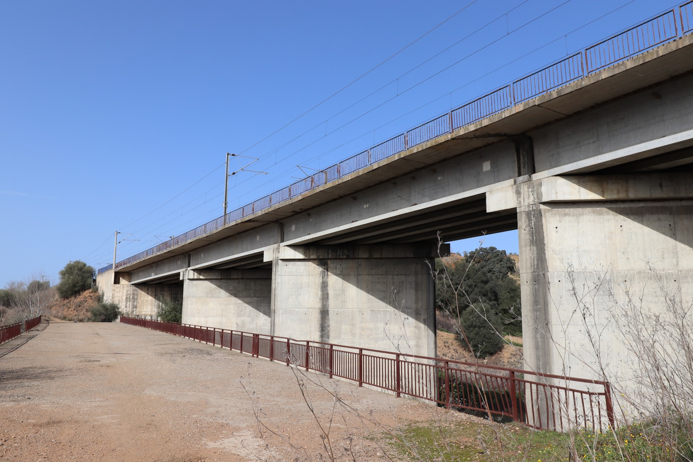
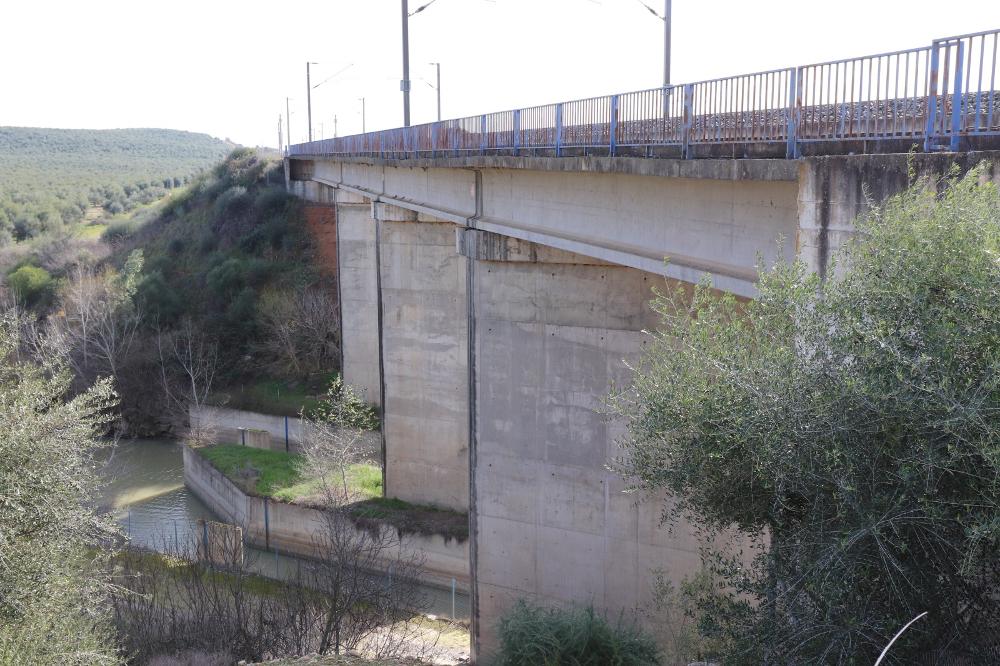
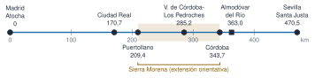
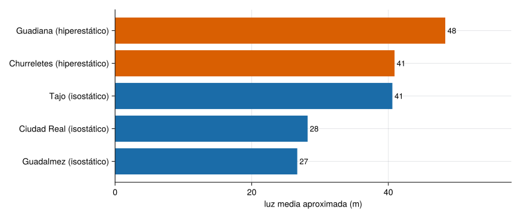

El viaducto Guadiato es un puente de la línea de alta velocidad (LAV, high-speed line) Madrid–Sevilla, entre Posadas y Almodóvar del Río, y el caso piloto del proyecto SMART-BRIDGES (R3), cuyos datos de este puente se incorporarán aquí. Esta página reúne lo que se sabe del puente y lo sitúa en su línea, que se inauguró en 1992 y tiene unos 472 km con decenas de viaductos y varios túneles (Wikipedia 2026): de dónde viene, por dónde pasa, qué cifras se manejan y qué otros puentes tiene.
Cada dato lleva su fuente. Donde dos fuentes no coinciden, se dice. Las cifras que no se han podido cotejar con la página original están marcadas.
Ficha
Puente
Viaducto Guadiato: 110,54 m y 4 vanos, de vigas en I con losa continua (Castro Triguero 2021)
Ubicación
LAV Madrid–Sevilla, entre Posadas y Almodóvar del Río (ubicación indicada por el responsable del curso)
Inauguración el 14-04-1992 y servicio comercial desde el 21-04-1992 (Wikipedia 2026)
Provincias
Madrid, Toledo, Ciudad Real, Córdoba y Sevilla (deducidas de las estaciones: la fuente no las enumera)
Fotos del puente
De junio de 2020 y febrero de 2024 (autoría: Rafael Castro Triguero), en el repositorio con licencia CC BY 4.0
Datos de vibración
Pendientes de incorporar; licencia pendiente de confirmar
NotaCómo citar
Para la información de la línea, cita las fuentes de cada dato (en la columna de la derecha y en las «Referencias» de esta página). Para los datos del puente se indicará aquí la referencia cuando se publiquen.
El viaducto Guadiato
El viaducto Guadiato es el «caso piloto n.º 1» de SMART-BRIDGES (Universidad de Córdoba 2026). La memoria del proyecto lo clasifica como tipo 1 (vigas en I con losa de continuidad; véanse los ocho puentes de R3): 110,54 m de longitud, 4 vanos, una luz máxima de 31,41 m y 250 km/h de velocidad máxima de línea, en la provincia de Córdoba (Castro Triguero 2021). Está en la LAV Madrid–Sevilla, entre Posadas y Almodóvar del Río: esa ubicación concreta la indica el responsable del curso, porque ni la memoria ni las webs del proyecto consultadas la dan.
Universidad de Córdoba. 2026. SMART-BRIDGES: transformamos puentes en infraestructuras inteligentes. Universidad de Córdoba. Páginas «Proyecto» y «Puente Guadiato», consultadas el 01-11-2026. https://www.uco.es/smartbridges/.
Las fotos del puente se tomaron desde el suelo y con un dron:

(a) Vista aérea del puente y, a su lado, un puente metálico de celosía (febrero de 2024).

(b) Vista lateral aérea del puente (febrero de 2024).

(c) Vista inferior lateral, con las pilas y las vigas bajo el tablero (junio de 2020).

(d) Pilas junto al canal (junio de 2020).
Figura 1: El puente Guadiato. Fotos: Rafael Castro Triguero.
Las vistas aéreas muestran tres pilas, lo que concuerda con los 4 vanos de la memoria. Se ve, sin medir nada, un viaducto con vigas bajo el tablero, pilas de hormigón de sección rectangular, vías con catenaria y, junto a él, otras estructuras más bajas y un puente metálico de celosía; bajo el viaducto pasa un canal de agua.
El viaducto Guadiato mide 110,54 m y tiene 4 vanos. ¿Cuál es su luz media? Compárala con su luz máxima, de 31,41 m: ¿puede tener los cuatro vanos iguales?
\(110{,}54/4 = 27{,}635\ \mathrm{m}\approx 27{,}6\ \mathrm{m}\). Como la luz máxima (31,41 m) es mayor que la media, los vanos no son iguales: la luz media sirve de referencia, no de dato exacto (y la longitud total puede incluir algo más que los vanos).
Según la memoria, los modos de flexión y de torsión de la losa de estos puentes están, en los modelos numéricos, entre unos 5 y 10 Hz, un rango adecuado para el análisis modal operacional (OMA) y la monitorización; son resultados de modelo, no medidas (Castro Triguero 2021).
Castro Triguero, Rafael. 2021. SMART-BRIDGES: Smart structural health monitoring for high-speed railway bridges. Technical memory. Universidad de Córdoba, Universidad de Granada e Ineco. Convocatoria 2021 de Proyectos de I+D+i en Líneas Estratégicas, prioridad 21.
NotaQué falta de este puente
Su punto kilométrico exacto y su posición. Hasta tenerlos no se puede situar en la escala de la Figura 3 ni en el mapa.
AdvertenciaDatos pendientes
Los datos de vibración del viaducto Guadiato todavía no están en el repositorio. Cuando se incorporen, esta página tendrá:
la ficha de los datos (sensores, frecuencia de muestreo, unidades, número de registros y qué se publica);
el análisis de los registros: el nivel de vibración, su espectro y el efecto del paso de los trenes;
la referencia que hay que citar y la licencia.
Hasta entonces no se muestra ningún valor medido. Dónde están los datos del proyecto y cómo se accede a ellos se explica en R3.
De Despeñaperros a la Expo del 92
NotaUn poco de historia: una línea nueva en ancho internacional
1988. Empiezan las obras, en el tramo Getafe–Villaseca. El 9 de diciembre de 1988 se decide usar el ancho internacional, y el 2 de octubre de 1989 se coloca el primer tramo de carril (Wikipedia 2026).
Por qué una línea nueva. Según Adif, el paso de Despeñaperros era el cuello de botella de la comunicación con Andalucía; duplicar la vía existente se descartó por su dificultad técnica y por lo que habría perturbado la explotación, y la decisión del ancho europeo obligó a modificar el proyecto original hasta convertirlo en una línea nueva (Adif Alta Velocidad 2026a) (sin cotejar con la web original).
1992. El 14 de abril se inaugura la línea, coincidiendo con la Exposición Universal de Sevilla, y el 21 de abril empieza el servicio comercial (Wikipedia 2026).
Fuentes consultadas el 01-11-2026. La página de Wikipedia se editó por última vez el 29-10-2026 y las páginas de Adif no pudieron abrirse con comprobación de certificado desde el entorno de trabajo, por lo que sus datos proceden de un resumen de buscador y están por cotejar.
La línea une Madrid Puerta de Atocha con Sevilla Santa Justa. Entre ambas hay, además de varios puntos intermedios de la vía, estaciones en Ciudad Real, Puertollano, Villanueva de Córdoba–Los Pedroches y Córdoba (Wikipedia 2026).
Figura 2: Esquema de la LAV Madrid–Sevilla. Las posiciones son aproximadas y los tramos entre puntos se dibujan rectos: no es el trazado real. Los puntos kilométricos (PK) son los de (Wikipedia 2026). El tramo naranja es el del puente Guadiato (SMART-BRIDGES), entre Posadas y Almodóvar del Río; su posición exacta no se conoce todavía.
Con los puntos kilométricos se ve mejor la escala de la línea y dónde cae cada cosa:

Figura 3: La línea a escala de punto kilométrico, de 0 a 471,8 km. Estaciones, círculos; punto de referencia de Almodóvar del Río, cuadrado. La extensión de Sierra Morena es orientativa: la fuente dice que concentra la mayoría de túneles y viaductos, pero no da sus puntos kilométricos.
Ver el código
estaciones = [("Madrid Puerta de Atocha", 0.0), ("Ciudad Real", 170.749), ("Puertollano", 209.449), ("Villanueva de Córdoba-Los Pedroches", 285.193), ("Córdoba Central", 343.667), ("Sevilla Santa Justa", 470.493)]pk =Dict(estaciones)L_linea =471.8# longitud total (km)pk_almodovar =362.958# punto de referencia de Almodóvar del Ríotramos = [("Madrid – Ciudad Real", pk["Madrid Puerta de Atocha"], pk["Ciudad Real"]), ("Ciudad Real – Córdoba", pk["Ciudad Real"], pk["Córdoba Central"]), ("Córdoba – Sevilla", pk["Córdoba Central"], pk["Sevilla Santa Justa"])]d_cor_alm = pk_almodovar - pk["Córdoba Central"]nothing
Ver el código
println("| Tramo | Longitud (km) | Parte de la línea |\n|---|---|---|\n"*join(["| $nom | $(coma(b - a; d=1)) | $(coma(100* (b - a) / L_linea; d=0)) % |" for (nom, a, b) in tramos], "\n"))
Tabla 1: Tramos de la línea entre estaciones principales, calculados con los puntos kilométricos de (Wikipedia 2026).
Tramo
Longitud (km)
Parte de la línea
Madrid – Ciudad Real
170,7
36 %
Ciudad Real – Córdoba
172,9
37 %
Córdoba – Sevilla
126,8
27 %
El punto de referencia de Almodóvar del Río está a 19,3 km de Córdoba Central, en dirección a Sevilla.
Con los puntos kilométricos de la Figura 3 (Córdoba Central, 343,667; punto de referencia de Almodóvar del Río, 362,958), ¿a cuántos kilómetros está Almodóvar del Río de Córdoba?
\(362{,}958-343{,}667 = 19{,}291\ \mathrm{km}\approx 19{,}3\ \mathrm{km}\). Es una distancia medida a lo largo de la vía, no en línea recta.
Las cifras de la línea (y dónde no coinciden)
La línea tiene muchos viaductos y túneles, pero las fuentes no dan las mismas cifras de los viaductos:
Ver el código
viaductos_wiki = (31, 9845) # número y longitud total (m)viaductos_adif = (32, 8355)tuneles = (17, 16030)pct(m) =100* m / (1000* L_linea)miles(n) =replace(string(n), r"(?<=\d)(?=(\d{3})+$)" => ".") # 9845 -> 9.845println("| Obra | Wikipedia | Adif AV (sin cotejar) | Parte de la longitud de la línea |\n|---|---|---|---|\n" *"| Viaductos | $(viaductos_wiki[1]) · $(miles(viaductos_wiki[2])) m | $(viaductos_adif[1]) · $(miles(viaductos_adif[2])) m | entre el $(coma(pct(viaductos_adif[2]); d=1)) % y el $(coma(pct(viaductos_wiki[2]); d=1)) % |\n"*"| Túneles | $(tuneles[1]) · $(miles(tuneles[2])) m | $(tuneles[1]) · $(miles(tuneles[2])) m | el $(coma(pct(tuneles[2]); d=1)) % |")
Tabla 2: Número y longitud total de viaductos y túneles según dos fuentes (Wikipedia 2026; Adif Alta Velocidad 2026b). La última columna es un cálculo propio sobre 471,8 km.
Obra
Wikipedia
Adif AV (sin cotejar)
Parte de la longitud de la línea
Viaductos
31 · 9.845 m
32 · 8.355 m
entre el 1,8 % y el 2,1 %
Túneles
17 · 16.030 m
17 · 16.030 m
el 3,4 %
AdvertenciaLas fuentes no coinciden en los viaductos
Una da 31 viaductos y 9.845 m; la otra, 32 y 8.355 m. Los túneles, en cambio, coinciden. Hasta cotejarlo con la web de Adif, no uses una cifra de viaductos como dato firme. Ambas fuentes coinciden en que la mayoría de túneles y viaductos se concentra en Sierra Morena (Wikipedia 2026; Adif Alta Velocidad 2026b).
Wikipedia y Adif dan el mismo número de viaductos de la línea.
Falso. Wikipedia da 31 viaductos con 9.845 m en total y Adif, 32 con 8.355 m (cifra sin cotejar). Cuando dos fuentes difieren, se cita cada una y se avisa; no se elige una en silencio.
Otros puentes del recorrido
Un libro de puentes ferroviarios (Garcı́a Mateo 2004) cataloga unas treinta y cuatro obras de la línea, todas de 1992. Se resumen cinco con valores aproximados (longitud redondeada a 10 m): el número de vanos y el esquema son los del libro; la luz media es un cálculo propio, longitud entre vanos, y supone vanos iguales. Las fuentes consultadas no dan su punto kilométrico, así que no se pueden situar en el mapa.
Ver el código
obras = [("Guadalmez", 800, 30, "isostático"), ("Tajo", 690, 17, "isostático"), ("Ciudad Real", 930, 33, "isostático"), ("Guadiana", 290, 6, "hiperestático"), ("Churreletes", 450, 11, "hiperestático")]luz_media(L, n) = L / n # luz media (m), con vanos igualesluces = [luz_media(L, n) for (_, L, n, _) in obras]nothing
Ver el código
println("| Obra | Longitud aprox. (m) | Vanos | Esquema | Luz media aprox. (m) |\n|---|---|---|---|---|\n"*join(["| $nom | $L | $n | $esq | $(Int(round(luz_media(L, n)))) |" for (nom, L, n, esq) in obras], "\n"))
Tabla 3: Cinco viaductos de la línea. Número de vanos y esquema, de Garcı́a Mateo (2004) (capítulo 13.1); longitud redondeada a 10 m; luz media, cálculo propio con vanos iguales.
Garcı́a Mateo, José Luis. 2004. Inventario de puentes ferroviarios de España. Doce Calles.
Obra
Longitud aprox. (m)
Vanos
Esquema
Luz media aprox. (m)
Guadalmez
800
30
isostático
27
Tajo
690
17
isostático
41
Ciudad Real
930
33
isostático
28
Guadiana
290
6
hiperestático
48
Churreletes
450
11
hiperestático
41
El viaducto de la variante de Ciudad Real es, según Adif, el más largo de la línea, con unos 930 m (Adif Alta Velocidad 2026b), un dato compatible con el de la Tabla 3 (cifra de Adif sin cotejar).
Figura 4: Una obra de \(n\) vanos iguales y longitud total \(L\): la luz media es \(L/n\).
Un esquema isostático es el de vanos que trabajan de forma independiente; en uno hiperestático los vanos son continuos y se condicionan entre sí. Es un dato de partida de cualquier modelo de la obra.
Ver el código
orden =sortperm(luces)etiquetas = ["$(obras[i][1]) ($(obras[i][4]))" for i in orden]colores = [obras[i][4] =="isostático" ? AZUL : NARANJA for i in orden]fig =Figure(size=(860, 360))ax =Axis(fig[1, 1]; xlabel="luz media aproximada (m)", yticks=(1:5, etiquetas))barplot!(ax, 1:5, luces[orden]; direction=:x, color=colores)for (k, i) inenumerate(orden)text!(ax, luces[i], k; text=" "*string(Int(round(luces[i]))), align=(:left, :center), fontsize=13)endxlims!(ax, 0, 58)fig

Figura 5: Luz media aproximada de los vanos de las cinco obras. Azul, esquema isostático; naranja, hiperestático (también indicado en la etiqueta). Cálculo propio con longitudes redondeadas y vanos iguales.
La actividad de la LAV de M3 parte de uno de estos vanos y usa un escenario sintético (no son medidas de la línea): allí se explica cómo elegir la adquisición y qué cambia en el espectro durante el paso de un tren.
Otras fuentes para ampliar el catálogo
Quedan por revisar dos fuentes que no se han podido abrir desde el entorno de trabajo (error de acceso):
Las fotos del puente Guadiato son de Rafael Castro Triguero y están en el repositorio, reducidas y sin metadatos, con licencia CC BY 4.0 (datos/reales-publicables/guadiato-puente/). Esta página no incluye otras fotografías de la línea. Las imágenes de la web de Adif Alta Velocidad pueden descargarse en baja o media resolución solo para usos sin ánimo de lucro, con el crédito «Archivo Adif»; Adif se reserva el resto de derechos y pide solicitar permiso para la alta resolución (condiciones consultadas el 01-11-2026). Eso no es compatible con la licencia CC BY-SA 4.0 del curso, así que no se copian al repositorio: si necesitas verlas, están en la web de Adif Alta Velocidad. El mapa, la escala de puntos kilométricos, la portada y los esquemas son figuras propias.
Dónde se usa: la actividad de la LAV en M3 y, cuando haya datos, el análisis de un puente ferroviario real.
Qué no dicen estos datos
El mapa no es el trazado real: es un esquema con posiciones aproximadas y tramos rectos.
La extensión de Sierra Morena en el mapa y en la escala de PK es orientativa; las fuentes no dan sus puntos kilométricos.
Las cifras de Adif no se han podido cotejar con su web; las de Wikipedia son de una página editable y no se han contrastado con una fuente primaria. En los viaductos difieren.
Las cifras de las cinco obras son del catálogo citado, redondeadas, y no se han contrastado con otra fuente. La luz media supone vanos iguales; los vanos reales pueden diferir entre sí.
No hay aquí ninguna medición de vibración del puente: hasta que se incorporen los datos de SMART-BRIDGES, la página es una ficha y una guía, no un conjunto de registros.
Que el viaducto Guadiato esté entre Posadas y Almodóvar del Río es información del responsable del curso: ni la memoria ni las webs de SMART-BRIDGES consultadas la recogen.
Los datos del puente (longitud, vanos, luces, modos entre 5 y 10 Hz) son los de la memoria de la solicitud de 2021: datos de proyecto y resultados de modelo, no medidas.
Referencias
Son las mismas que aparecen en el margen, junto al texto. La lista completa del curso, con el estado de verificación de cada ficha, está en recursos/bibliografia.bib del repositorio.
Castro Triguero, Rafael. 2021. SMART-BRIDGES: Smart structural health monitoring for high-speed railway bridges. Technical memory. Universidad de Córdoba, Universidad de Granada e Ineco. Convocatoria 2021 de Proyectos de I+D+i en Líneas Estratégicas, prioridad 21.
Garcı́a Mateo, José Luis. 2004. Inventario de puentes ferroviarios de España. Doce Calles.
Universidad de Córdoba. 2026. SMART-BRIDGES: transformamos puentes en infraestructuras inteligentes. Universidad de Córdoba. Páginas «Proyecto» y «Puente Guadiato», consultadas el 01-11-2026. https://www.uco.es/smartbridges/.